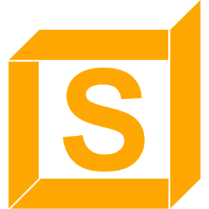

<mat-sidenav-container class="" *ngIf="true" style="height:100%;">

  <mat-sidenav #sidenav mode="over" [(opened)]="opened" (opened)="events.push('open!')" (closed)="events.push('close!')" style="width:240px;">
    
    <div *ngIf="isLoggedIn() && user" class="userData" routerLink="/profil" (click)="opened=false;" >
      
      <p class="username" >{{user.username}}</p>
      <p class="email">{{user.email}}</p>
    </div>
    <div>
    <button mat-button *ngFor="let sidebarItem of this.sidebarItems" class="sideBarItems" [routerLink]="sidebarItem !== 'Odjavi se' ? '/'+sidebarItem.toLowerCase().replace(' ','-') : '/login'" (click)="navi(sidebarItem)">
      {{sidebarItem}}
    </button>
    </div>
  </mat-sidenav>

  <mat-sidenav-content style="text-align: center;">
    <mat-toolbar style="text-align:center; box-shadow: 0 3px 6px rgba(0,0,0,0.16), 0 3px 6px rgba(0,0,0,0.23); position: fixed; z-index: 100;">
      <button mat-button (click)="sidenav.toggle()" style="min-width:50px;padding:0%;">
        <mat-icon>reorder</mat-icon>
      </button>
      <h3 class="title">{{current}}</h3>
      
    </mat-toolbar>
   <!--<div style="padding: 3%; ">-->
    <div class="content-container">
      <router-outlet style="position: absolute;"></router-outlet>
    </div>
    <!--</div>-->
  </mat-sidenav-content>
</mat-sidenav-container>
<app-toast></app-toast>
